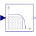
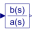
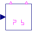

FilterPT1 + all-pass filter |

|
Diagram
{kind=link}
Information
This information is part of the Modelica Standard Library maintained by the Modelica Association.
First order filter with cut-off frequency fCut. The phase shift of the filter is compensated by a series of two first order all-pass filters tuned on supply frequency f.
Parameters (5)
| f |
Value: 50 Type: Frequency (Hz) Description: Mains Frequency |
|---|---|
| fCut |
Value: 2 * f Type: Frequency (Hz) Description: Cut off frequency |
| na |
Value: 2 Type: Integer Description: Count of 1st order all-pass |
| fa |
Value: f / tan(pi / na - atan(f / fCut) / (2 * na)) Type: Frequency (Hz) Description: Characteristic frequency of all-pass filter |
| yStart |
Value: 0 Type: Real Description: Start value of output |
Connectors (2)
| u |
Type: RealInput Description: Connector of Real input signal |
|
|---|---|---|
| y |
Type: RealOutput Description: Connector of Real output signal |
Components (2)
| firstOrder |
Type: FirstOrder |
|
|---|---|---|
|  | transferFunction |
Type: TransferFunction[na] |
Used in Components (1)
|  |
Modelica.Electrical.PowerConverters.ACDC.Control Generic control of 2*m pulse rectifiers |